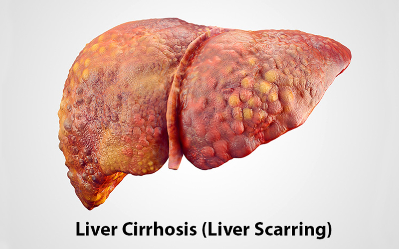

Liver Cirrhosis: A Brief Overview
Liver cirrhosis is a progressive liver disease characterized by irreversible scarring (fibrosis) of liver tissue. This scarring results from long-term damage to the liver and disrupts the liver's ability to function properly. Cirrhosis can lead to serious complications, including liver failure, portal hypertension, ascites, varices, and an increased risk of liver cancer. It is often the end stage of chronic liver diseases, where the liver tissue is severely damaged and replaced by fibrous tissue.
Physiology of Liver Cirrhosis
The liver plays a crucial role in detoxification, digestion, metabolism, and the production of essential proteins like albumin and clotting factors. In cirrhosis, the liver becomes increasingly scarred, which obstructs the normal flow of blood through the liver and impairs its ability to carry out these functions.
Hepatocytes (liver cells) are damaged due to chronic injury or inflammation, which leads to fibrosis—the formation of scar tissue. Over time, this scar tissue becomes more extensive, reducing the liver's functional capacity. The liver also becomes larger or sometimes shrunken due to the scarring process.
As the fibrosis progresses, the liver's blood flow is disrupted, causing portal hypertension, where the pressure in the blood vessels leading to the liver increases. This can lead to complications like varices (enlarged veins) in the esophagus and stomach, which may rupture and cause life-threatening bleeding. The liver’s reduced ability to detoxify the body can lead to a build-up of toxins, resulting in encephalopathy (brain dysfunction) and other systemic symptoms.
Causes of Liver Cirrhosis
Cirrhosis can be caused by a variety of conditions and lifestyle factors, including:
- Chronic Alcohol Abuse: Alcoholic liver disease is one of the most common causes of cirrhosis. Chronic alcohol consumption leads to fatty liver, alcoholic hepatitis, and eventually cirrhosis as the liver becomes progressively scarred.
- Chronic Viral Hepatitis: Hepatitis B and Hepatitis C infections are major causes of cirrhosis worldwide. Chronic inflammation from these viral infections leads to ongoing liver damage and fibrosis.
- Non-Alcoholic Fatty Liver Disease (NAFLD): NAFLD, often linked to obesity, type 2 diabetes, insulin resistance, and metabolic syndrome, can progress to non-alcoholic steatohepatitis (NASH) and eventually cirrhosis.
- Autoimmune Hepatitis: In autoimmune hepatitis, the body’s immune system attacks its own liver cells, causing inflammation and fibrosis that can lead to cirrhosis.
- Chronic Biliary Diseases: Conditions like primary biliary cholangitis and primary sclerosing cholangitis cause damage to the bile ducts, leading to bile accumulation in the liver and resulting in cirrhosis.
- Hemochromatosis: A genetic condition where excess iron builds up in the liver, leading to damage and cirrhosis.
- Wilson’s Disease: A genetic disorder causing excessive copper accumulation in the liver, leading to cirrhosis.
- Medications and Toxins: Long-term use of certain medications (e.g., methotrexate) or exposure to toxins can damage the liver and lead to cirrhosis.
- Fatty Liver Disease: Conditions like NASH (Non-Alcoholic Steatohepatitis) can progress to cirrhosis if not properly managed. This is often linked to metabolic syndrome, obesity, and diabetes.
Ayurvedic Treatment for Liver Cirrhosis
In Ayurveda, liver cirrhosis is considered a result of imbalanced Pitta dosha, which governs metabolism and digestion, as well as Kapha dosha, which governs tissue formation and fat. Ayurveda focuses on restoring balance to the digestive system and detoxifying the liver to reduce inflammation, regenerate liver cells, and prevent further damage. Ayurvedic treatment for cirrhosis includes herbal remedies, dietary adjustments, detoxification therapies, and lifestyle modifications aimed at improving liver function.
Additional Ayurvedic Approaches for Liver Cirrhosis
- Dietary Modifications: A light, easy-to-digest diet is recommended to reduce the burden on the liver. Pitta-balancing foods such as green leafy vegetables, fruits, and whole grains are encouraged. Foods that are cooling, alkaline, and anti-inflammatory help to promote liver detoxification. Avoiding heavy, oily, and spicy foods, alcohol, and processed foods is crucial for liver health.
- Yoga and Exercise: Yoga postures, particularly those that involve gentle twists (e.g., Ardha Matsyendrasana), can help improve liver circulation, promote detoxification, and support the overall healing process. Regular exercise can also help manage underlying conditions like obesity and diabetes, which are risk factors for liver cirrhosis.
- Hydration: Adequate hydration is essential to support liver function. Ayurvedic teas made from coriander, ginger, or cumin can promote digestion, detoxification, and liver health.
Conclusion
Liver cirrhosis is a serious and progressive condition resulting from chronic liver damage and inflammation. In Ayurveda, the treatment of cirrhosis focuses on detoxifying the liver, reducing inflammation, and promoting liver regeneration. Herbs like Turmeric, Guduchi, Kutki, Bhumyamalaki, and Silymarin play a vital role in healing liver tissue and supporting overall liver health. Ayurvedic treatment also emphasizes dietary modifications, Panchakarma detoxification, and lifestyle changes to enhance liver function and prevent further damage. With the right approach, Ayurveda offers a holistic and effective treatment plan to manage liver cirrhosis and improve quality of life.